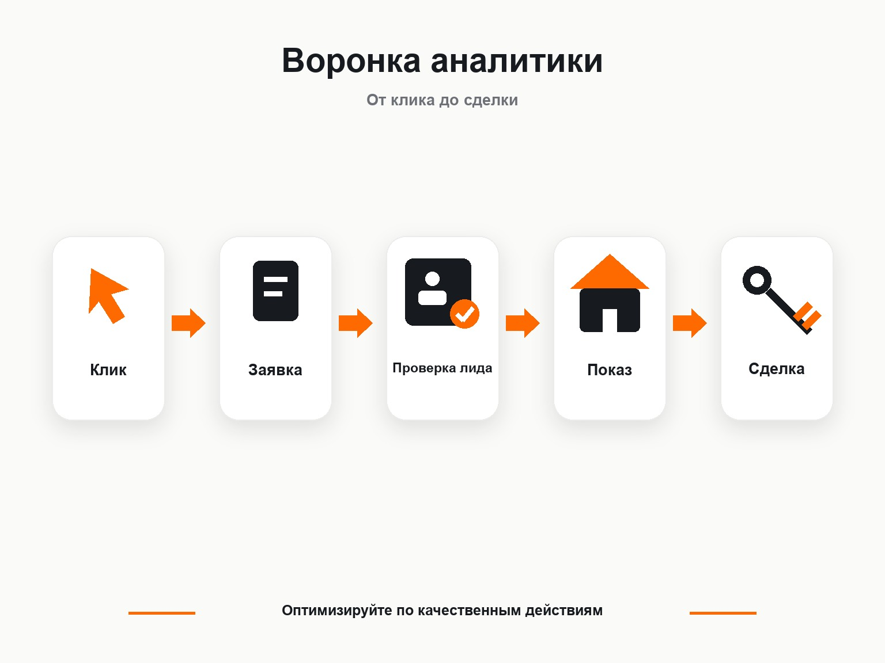

Яндекс Директ
Яндекс Директ для недвижимости: как получать целевые заявки
Яндекс Директ для недвижимости может приводить заявки на покупку квартир, новостройки, коммерческие помещения и услуги агентств. Но сама по себе настройка рекламы здесь редко решает задачу. На результат сильно влияют объект, цена, район, формат предложения, посадочная страница и то, какие заявки рекламная система получает в качестве сигнала для оптимизации.
Я работал с разными направлениями недвижимости: продажей студий в нескольких ЖК, trade-in квартир и коммерческими помещениями. На практике одна и та же рекламная механика может давать совершенно разный результат даже для двух объектов одного застройщика.
Поэтому рекламу недвижимости я обычно начинаю не со сбора тысяч ключевых фраз, а с разделения спроса, объектов и целей бизнеса.
Что можно рекламировать через Яндекс Директ
Через Директ можно продвигать продажу недвижимости, новостройки и долевое строительство, а также риэлторские услуги. При этом сайт и рекламные материалы должны соответствовать требованиям Яндекса для данной категории.
Основные направления:
- квартиры в новостройках;
- отдельные жилые комплексы;
- вторичная недвижимость;
- коммерческие помещения;
- загородные дома и участки;
- инвестиционная недвижимость;
- услуги агентства или риэлтора;
- обмен жилья и trade-in;
- подбор объектов под требования покупателя.
Запускать все направления в одну рекламную кампанию обычно не стоит. Человек, который ищет помещение под магазин, и человек, выбирающий студию для проживания, находятся в разных сценариях покупки.
Как разделять рекламу недвижимости
Самый простой принцип - структура рекламного кабинета должна повторять структуру спроса и бизнеса.
Если застройщик продает несколько ЖК, желательно видеть статистику отдельно по каждому комплексу. Если внутри ЖК продвигаются сильно отличающиеся предложения, может понадобиться дополнительное разделение.
Например:
| Направление | Что можно выделять отдельно |
|---|---|
| Новостройки | ЖК, район, тип квартиры, планировки |
| Агентство недвижимости | покупка, продажа, обмен, подбор |
| Коммерческая недвижимость | офисы, торговые помещения, склады |
| Загородная недвижимость | дома, участки, коттеджные поселки |
| Инвестиционные объекты | доходная недвижимость, помещения под аренду |
Так проще контролировать расходы и видеть реальную стоимость обращения по каждому продукту.
Это хорошо видно в моем кейсе по продаже студий в Москве:
https://naklikay.ru/cases/moscow-studios-real-estate-yandex-direct/
Одновременно рекламировалось несколько ЖК, но спрос распределялся между ними очень неравномерно. Средняя стоимость заявки с формы составила 528 ₽, при этом по отдельным объектам она находилась в диапазоне от 300 до 5000 ₽. Звонок в среднем обходился в 2771 ₽.
Если смотреть только общую стоимость заявки по аккаунту, такие различия легко пропустить.
Поиск Яндекса для недвижимости
Поисковая реклама работает с уже сформированным спросом.
Человек сам вводит запрос:
- купить квартиру в новостройке;
- коммерческое помещение купить;
- купить студию в Москве;
- обменять квартиру на новостройку;
- купить помещение под магазин.
Это сильная сторона поиска - пользователь уже сформулировал потребность.
Но у недвижимости есть проблема: наиболее очевидные коммерческие запросы привлекают много рекламодателей. Поэтому попытка построить весь трафик только вокруг нескольких самых горячих фраз может сильно ограничить объем или сделать его слишком дорогим.
Я обычно разделяю запросы по смыслу:
- Прямой спрос на объект или услугу.
- Запросы по конкретному ЖК или застройщику.
- Географические запросы по району, улице, метро.
- Запросы по характеристикам объекта.
- Более широкий спрос, который можно тестировать отдельно.
После запуска отдельно анализируются реальные поисковые запросы. Именно они показывают, какую аудиторию фактически приводит Директ.
Подробнее сам процесс настройки описал в статье:
https://naklikay.ru/blog/kak-nastroit-yandex-direct/
РСЯ для недвижимости
РСЯ работает по другой логике. Пользователь необязательно ищет квартиру или помещение непосредственно в момент показа объявления. Алгоритмы могут находить аудиторию по интересам, поведению, тематике и другим доступным сигналам.
Для недвижимости это особенно интересно из-за длинного цикла выбора. Человек может сначала изучать районы и цены, затем несколько раз возвращаться к предложениям, сравнивать ЖК и только после этого связываться с отделом продаж.
В РСЯ большое значение имеют:
- изображение объекта;
- понятный оффер;
- цена или другой конкретный ориентир;
- район и расположение;
- преимущества проекта;
- соответствие объявления посадочной странице.
Сам по себе дешевый клик здесь ничего не гарантирует. Я оцениваю РСЯ по заявкам и их качеству.
Хороший пример - мой кейс агентства недвижимости с программой trade-in:
https://naklikay.ru/cases/real-estate-agency-trade-in-yandex-direct/
У клиента был обычный многостраничный сайт, но для рекламы мы сделали отдельный лендинг и квиз под конкретное предложение - обмен старой квартиры на новую.
При бюджете около 38 000 ₽ в месяц заявки обходились примерно в 1500-2007 ₽, а квалифицированные обращения - в 1915-3010 ₽. Основной объем пришел из РСЯ.
Подробнее механику самого канала я разбираю в статье:
https://naklikay.ru/blog/chto-takoe-rsya-v-yandex-direct/
Автотаргетинг и алгоритмы Директа
Современный Яндекс Директ нельзя рассматривать как систему, где специалист один раз составляет семантическое ядро и дальше управляет только ключевыми фразами.
В Единой перфоманс-кампании доступны Поиск, Рекламная сеть и другие места размещения. На уровне групп можно использовать автотаргетинг, тематические слова, интересы, сегменты аудиторий и данные Метрики.
В недвижимости алгоритмам особенно нужны качественные данные.
Если оптимизировать рекламу на любое заполнение формы, система будет искать пользователей, похожих на тех, кто заполняет форму. Но дешевый лид еще не означает потенциального покупателя.
Поэтому со временем полезнее передавать более глубокие события:
- квалифицированная заявка;
- подтвержденный звонок;
- запись на просмотр;
- визит в офис продаж;
- бронирование;
- сделка.
Чем длиннее воронка, тем сильнее разница между обычным лидом и результатом бизнеса.
Аналитика недвижимости должна доходить до CRM
Для небольшого проекта на первом этапе можно начать с Метрики, целей форм и коллтрекинга. Для серьезной работы этого постепенно становится мало.
Типичная воронка недвижимости выглядит примерно так:
Клик → заявка → дозвон → квалифицированный лид → показ объекта → бронь → сделка

Если рекламная система видит только первый этап, специалист знает стоимость заявки, но не знает, какие кампании приводят покупателей.
Яндекс позволяет передавать офлайн-конверсии из CRM и связывать их с визитами на сайт. Эти данные могут использоваться при оптимизации рекламных стратегий.
Это особенно полезно для недвижимости, где между первым обращением и сделкой могут происходить десятки взаимодействий.
Я бы смотрел минимум на:
- расход;
- количество обращений;
- стоимость обращения;
- долю квалифицированных лидов;
- стоимость квалифицированного лида;
- количество показов объектов;
- бронирования;
- сделки;
- стоимость привлечения сделки.
CTR и CPC остаются полезными диагностическими метриками, но сами по себе не отвечают на вопрос, окупается ли реклама.
Посадочная страница влияет на Директ сильнее, чем кажется
Иногда рекламный кабинет пытаются оптимизировать месяцами, хотя проблема находится на сайте.
Для конкретного ЖК пользователь после клика ожидает сразу увидеть:
- что продается;
- где расположен объект;
- цены или понятный диапазон;
- планировки;
- фотографии;
- срок сдачи;
- способы покупки;
- преимущества;
- форму обращения.
Если реклама обещает студию в конкретном районе, а пользователь попадает на главную страницу агентства с сотнями объектов, ему приходится заново искать нужное предложение.
Под специальные услуги часто эффективнее создавать отдельные посадочные страницы.
Именно так было в проекте с trade-in. Старый сайт продолжил выполнять свои задачи, а рекламный трафик получил отдельную страницу с одним сценарием и понятным путем к заявке.
Квиз в рекламе недвижимости
Квиз имеет смысл использовать не потому, что он сам по себе повышает конверсию. Он полезен, когда вопросы помогают человеку сформулировать потребность и одновременно дают отделу продаж информацию для первого разговора.
Например:
- какой объект нужен;
- район;
- площадь;
- бюджет;
- способ оплаты;
- срок покупки.
Чем меньше лишних вопросов, тем лучше.
В моем кейсе коммерческой недвижимости в ЖК «Ватутинки Парк»:
https://naklikay.ru/cases/vatutinki-park-commercial-real-estate-yandex-direct/
Трафик велся на квиз-воронку. После переработки вопросов, текстов и рекламных связок стоимость лида снизилась примерно с 6000 до 1700 ₽. В одном из периодов 10 из 12 обращений были квалифицированными.
Здесь показатель качества был намного полезнее простого количества заполненных форм.
Ретаргетинг для длинного цикла сделки
Недвижимость редко покупают после первого посещения сайта.
Пользователь может:
- увидеть рекламу;
- посмотреть объект;
- уйти изучать конкурентов;
- вернуться через несколько дней;
- открыть планировки;
- снова уйти;
- оставить заявку позже.
Поэтому аудитории посетителей сайта стоит использовать отдельно.
Можно сегментировать людей, которые:
- были на странице конкретного ЖК;
- смотрели определенные типы объектов;
- начали заполнять форму;
- проходили квиз, но не отправили контакты;
- уже оставляли заявку.
РСЯ позволяет работать с сегментами Метрики и повторно обращаться к такой аудитории.
Фиды для большого количества объектов
Если на сайте большой каталог недвижимости и данные регулярно меняются, ручное создание объявлений становится неудобным.
Яндекс Директ поддерживает работу с фидами, а среди поддерживаемых форматов есть XML-фид Яндекс Недвижимости. Информация из источника может использоваться для автоматического формирования рекламных предложений.
Такой подход имеет смысл, когда объектов десятки или сотни и нужно регулярно обновлять информацию.
Для одного ЖК с несколькими типами квартир отдельный фид может оказаться избыточным. Здесь решение зависит от структуры каталога.
Как выбрать стратегию
В Единой перфоманс-кампании доступны автоматические стратегии, ориентированные на конверсии, клики и другие цели.
В большинстве проектов недвижимости конечная цель - конверсии, поэтому после накопления данных логично стремиться к оптимизации на целевые действия.
Но нельзя взять желаемую стоимость лида из головы и заставить систему стабильно приводить заявки именно по ней.
На цену влияют:
- конкуренция;
- регион;
- сам объект;
- спрос;
- цена недвижимости;
- предложение конкурентов;
- сайт;
- качество рекламы;
- выбранная цель;
- накопленные данные.
Если поставить алгоритму слишком жесткое ограничение, он может сильно сократить объем.
В моем проекте коммерческой недвижимости была обратная задача: клиенту требовалось ограниченное количество обращений, поэтому кампании периодически приходилось останавливать. Такие паузы мешали стабильному обучению алгоритмов и ограничивали потенциал рекламы.
Сколько стоит реклама недвижимости в Яндекс Директ
Универсальной цены заявки для недвижимости нет.
Даже внутри одного рекламного кабинета два ЖК способны отличаться по CPL в несколько раз. Мой проект со студиями в Москве показал диапазон стоимости заявки от 300 до 5000 ₽ по разным объектам при среднем значении 528 ₽.
Поэтому ориентироваться на чужую цифру «лид должен стоить 2000 рублей» опасно.
Сначала нужно определить экономику:
Допустимая стоимость сделки → конверсия квалифицированного лида в сделку → допустимая стоимость квалифицированного лида → допустимая стоимость первичного обращения.
И уже после этого оценивать возможности рекламы.
Типичные ошибки
Все объекты рекламируются вместе
Невозможно определить, какой ЖК или тип недвижимости реально расходует бюджет.
Рекламу оценивают по общему CPL
Дешевые заявки могут оказаться нецелевыми. Лучше сравнивать стоимость квалифицированного обращения.
Трафик ведут на главную страницу
Человеку приходится самостоятельно искать предложение, которое он только что увидел в рекламе.
Отслеживаются только формы
Часть покупателей звонит или обращается другим способом. Без телефонии и CRM реальная картина искажается.
Кампании постоянно останавливают и меняют
Автоматическим стратегиям нужна статистика. Частые резкие изменения мешают оценить результат предыдущих настроек.
Пытаются спасти рекламой слабый объект
Реклама может найти аудиторию, но она не изменит рынок. Если соседний ЖК предлагает больше за те же деньги, стоимость привлечения клиента почти неизбежно будет отличаться.
В проекте со студиями именно это было одной из причин большого разброса CPL между отдельными объектами.
Как я бы запускал Яндекс Директ для недвижимости
Последовательность зависит от проекта, но базово я использую такой порядок:
- Разделяю объекты и направления.
- Проверяю спрос и конкурентов.
- Определяю допустимую стоимость квалифицированного лида.
- Проверяю посадочные страницы.
- Настраиваю Метрику, формы и звонки.
- Готовлю отдельные рекламные предложения под сегменты.
- Запускаю Поиск и необходимые сетевые кампании.
- Анализирую реальные запросы и аудитории.
- Получаю от отдела продаж данные о качестве лидов.
- Передаю более глубокие конверсии из CRM.
- Масштабирую связки, которые приводят покупателей, а не просто формы.
На главной странице сайта собраны мои проекты по Яндекс Директу и другим каналам платного трафика:
https://naklikay.ru/
FAQ
Подходит ли Яндекс Директ агентству недвижимости?
Да. Через него можно рекламировать конкретные объекты, подбор недвижимости и отдельные услуги агентства. Лучше разделять разные сценарии спроса и оценивать результат по качеству обращений.
Что лучше для недвижимости - Поиск или РСЯ?
Универсального ответа нет. Поиск работает с уже сформированным спросом, РСЯ позволяет дополнительно находить аудиторию и возвращать пользователей с длинным циклом выбора. В моих проектах результат давали оба подхода в зависимости от задачи.
Нужно ли делать отдельную кампанию на каждый ЖК?
Если нужно отдельно управлять бюджетом, оффером и стоимостью заявки каждого объекта, разделение обычно оправдано. При небольшом объеме данных слишком сильное дробление, наоборот, может мешать алгоритмам.
Нужен ли отдельный лендинг?
Не всегда. Если существующая страница полностью отвечает рекламному предложению, можно использовать ее. Для отдельной услуги вроде trade-in или специальной акции собственный лендинг часто дает больше возможностей для работы с конверсией.
Какие цели настраивать в Метрике?
Минимум - отправку формы и значимые обращения с сайта. Для недвижимости желательно дополнительно учитывать звонки, а после накопления данных передавать квалифицированные лиды и другие этапы из CRM.
Можно ли гарантировать определенную стоимость лида?
Нет. Стоимость зависит от спроса, конкуренции, объекта, сайта, региона, рекламной стратегии и качества самого предложения. Корректнее сначала определить допустимую экономику проекта, а затем проверить ее рекламным тестом.